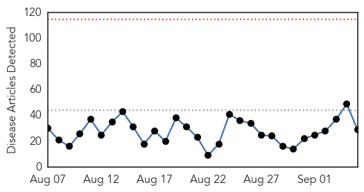
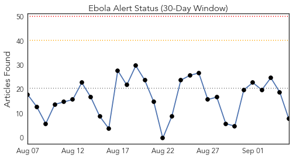
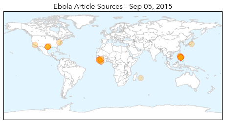
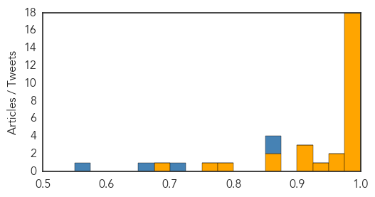

Toggle navigation
Early Warning
Daily Alerts
Ebola
Sep 05, 2015
Compare to:
-
Dengue Fever
Hemmorhagic Fever
Mold/Fungal Infection
Influenza
Meningitis
Pertussis / Whooping Cough
Middle East Respiratory Syndrome
Cholera
Hepatitis
Chikungunya
Yellow Fever
Bubonic Plague
West Nile Virus
Swine Flu
Measles
Unknown
Mumps
30 Day Trends
Web: 0
alerts
, 0
warnings
Twitter: 0
alerts
, 0
warnings
Top Articles:
1.000
Liberia Is Declared Free of Ebola (Again)
1.000
PH monkeys infected with Ebola not lethal to humans
1.000
Philippine Monkeys Infected with Ebola not Lethal to Humans — Naharnet
1.000
Village in Sierra Leone quarantined after Ebola death
1.000
Worried about Ebola? Get your flu shot instead
1.000
Nonlethal Ebola strain found in PH monkeys
1.000
Africa - News and Analysis
0.999
Philippine monkeys infected with Ebola not lethal to humans
0.999
Philippine monkeys infected with Ebola not lethal to humans
0.999
200 to Be Vaccinated In Sierra Leone After Ebola Death
0.998
Village of 1,000 people quarantined
0.997
Ebola Reston virus detected in captive monkeys
0.996
Review cites problems at Texas hospital during Ebola crisis
0.994
Poor communication, inadequate prepartion cited in review of Ebola crisis at Dallas hospital
0.991
Ebola transmission in Liberia over. Nation enters 90-day intensive surveillance period
0.982
Philippine monkeys infected with Ebola not lethal to humans
0.981
‘Good’ Ebola virus found in PH monkeys
0.975
Philstar Mobile
0.973
Philippine Monkeys Infected With Ebola Not Lethal to Humans
0.959
Ebola Reston Virus found in monkey breeding facility
0.933
Failures of Dallas hospital during Ebola crisis detailed in new report
0.922
Monkeys in Philippines positive of Ebola
0.914
Fleet of Ambulances to boost the restoration of basic health Services Post-Ebola
0.904
Review cites problems at Texas hospital during Ebola crisis
0.859
Social Mobilization and Fighting Ebola in Guinea
0.851
The need for a high-level bio-lab
0.783
CLG News
0.774
KDU Global Family Reunion Flyer
0.679
More heartbreak for Ebola survivor
Top Tweets:
0.869
Texas hospital wasn't prepared to handle patients with Ebola virus report says - Fox News
http://t.co/boHbRuerWQ
ebola EVD
0.869
Texas hospital wasn't prepared to handle patients with Ebola virus report says - Fox News
http://t.co/7lMVNKFe1E
ebola EVD
0.718
Philippine monkeys infected with Ebola not lethal to humans - Yahoo News
http://t.co/LoR8lSz7B6
ebola EVD
0.650
Sierra Leonean Village Quarantined After Ebola Death - The Guardian Nigeria (satire) (press releas...
http://t.co/pM3tVxRJvb
ebola EVD
0.558
CDC Director Talks About Ebola Global Health Security - Voice of America
http://t.co/bD2WPIerGr
ebola EVD
Web/News Articles

Tweets

Article Locations

Article Confidences
